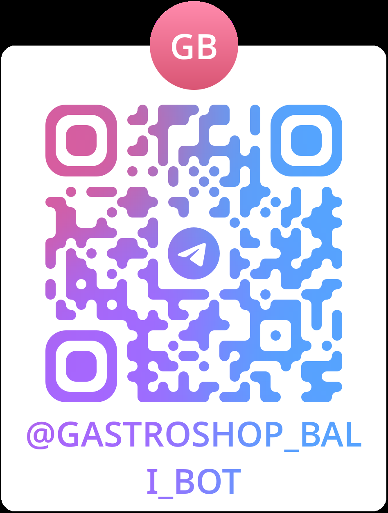

A clear, step-by-step guide through every office, stamp, and document you need to obtain your local residency paper.
Six steps. Follow in order. Allow a few days total.
First, figure out which banjar (local community) you live in. At the Kelurahan office you will find the list of Kelians (banjar heads).
Kantor Kelurahan JimbaranGo to your Kelian, collect a blank SKTT form and fill it in. You will need a sponsor (usually the homeowner) and 2 witnesses from your banjar.
Once the form is filled and signed by sponsor + witnesses, go back to the Kelian to get the official stamp and signature.
Head back to the Kelurahan Jimbaran office. They add another stamp to your form.
Kantor Kelurahan JimbaranNext stop: the sub-district office (Camat). They issue another stamp.
Final stop: the Badung civil registry (Dinas Kependudukan dan Catatan Sipil). Here you finally receive your SKTT.
Dinas Dukcapil Kabupaten BadungI also run GastroShop Bali — food delivery service on Bali via Telegram.
Open @GastroShop_Bali_bot →